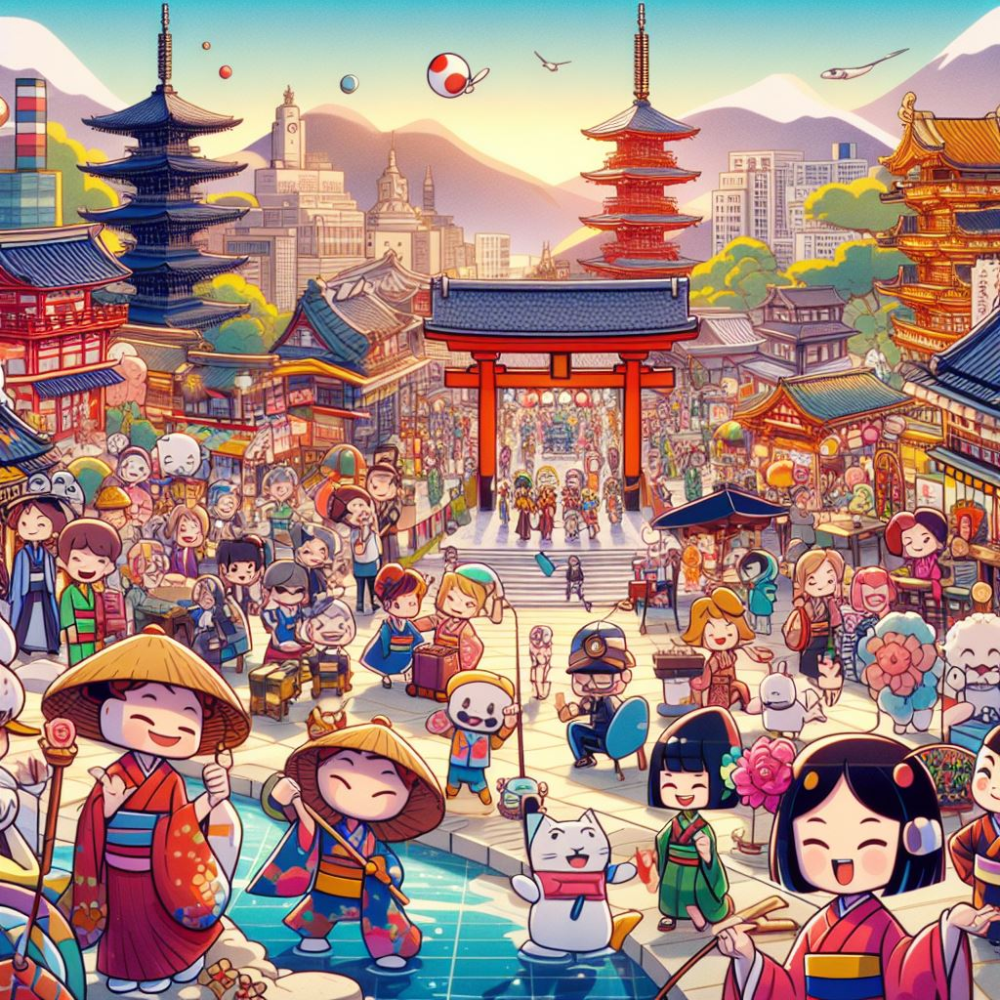
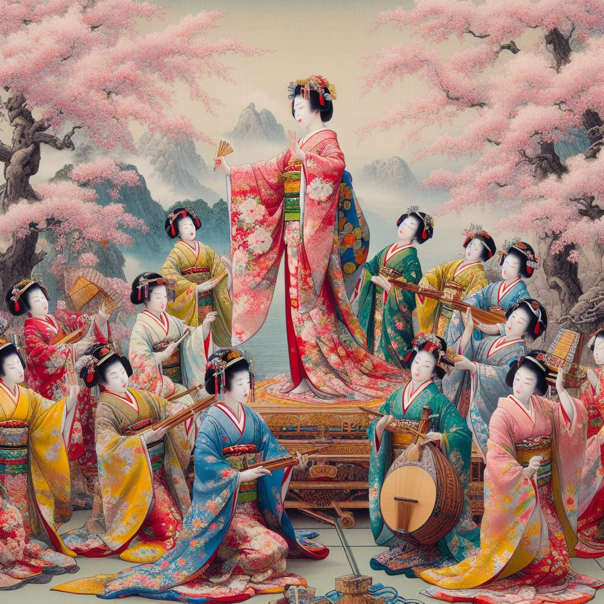
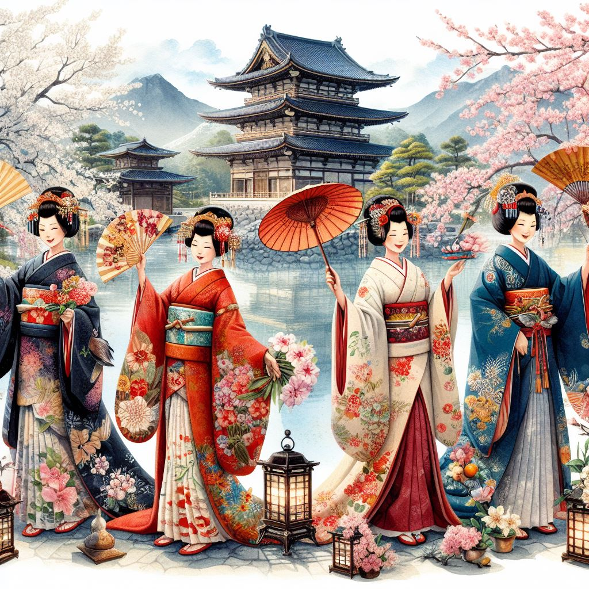

Tab Selection
Japan's culture pervades every aspect of its history and daily life.
Use these tabs to learn more about Japanese culture, the people
shaped by this culture, and their traditons.
Cultural Tapestry
1
2
3

Culture

Traditions

People

Culture (文化)
Japanese culture is a rich tapestry woven with a harmonious blend of tradition and modernity. Rooted in centuries-old customs and influenced by Shinto and Buddhist beliefs, Japanese culture places a strong emphasis on respect, harmony, and balance. Traditional arts such as Noh and Kabuki theater, as well as the delicate sounds of the koto and shamisen, showcase the nation's commitment to preserving its artistic heritage. Yet, Japan is also a global leader in technology and innovation, seamlessly blending ancient traditions with cutting-edge advancements. Whether it's the meticulous craftsmanship of sushi, the precision of martial arts like judo and kendo, or the reverence for nature seen in garden design, Japanese culture is a captivating journey through time that continues to captivate and inspire people worldwide.

Gagaku(雅楽)
Gagaku, the ancient court music and dance of Japan, holds a unique and revered place in the country's cultural heritage. Originating over a millennium ago, gagaku includes a distinctive form of Japanese dance that complements its musical counterpart. often characterized by slow, deliberate movements and elaborate costumes, is an integral part of the grand ceremonies and rituals performed at the imperial court. Gagaku dance expresses profound symbolic meanings, with performers embodying characters from folklore, mythology, or historical narratives. Gagaku Japanese dance is a living testament to the continuity of Japan's artistic legacy, connecting contemporary audiences to the refined aesthetics and spiritual dimensions of the country's ancient court traditions.Cuisine(料理)
Japanese cuisine is a culinary art that seamlessly blends flavors, aesthetics, and cultural traditions. Renowned for its emphasis on fresh, seasonal ingredients and meticulous preparation, Japanese food reflects a harmonious balance of taste, texture, and visual appeal. Sushi, perhaps the most iconic element, showcases the art of combining vinegared rice with various ingredients like fresh fish, vegetables, and seaweed. Sashimi, thinly sliced raw fish, exemplifies the purity of flavors that underlie Japanese gastronomy. Whether enjoying a comforting bowl of ramen, savoring the delicate flavors of kaiseki cuisine, or partaking in the communal experience of a hot pot meal, Japanese cuisine is a celebration of culinary precision, aesthetic presentation, and a deep connection to nature.Careers(キャリア)
Jobs in Japan reflect a diverse and dynamic employment landscape. The country's workforce is characterized by a strong work ethic and a commitment to excellence. Traditional industries, such as manufacturing and technology, coexist with the modern demands of the global economy. Many individuals work for large corporations known as keiretsu, while others find opportunities in the growing sectors of IT, robotics, and renewable energy. Japan's hospitality industry, including jobs in tourism and service, also plays a significant role. The work culture often emphasizes collaboration, dedication, and lifelong employment, contributing to a stable yet evolving job market. Foreign professionals are increasingly finding opportunities in Japan, adding a global dimension to the workforce and enriching the country's business landscape.
